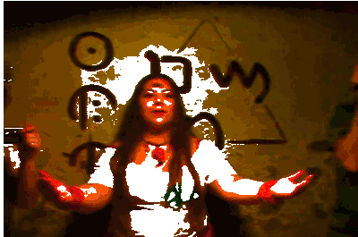
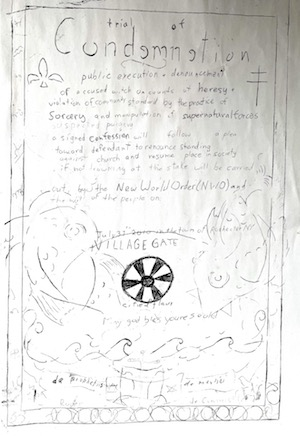
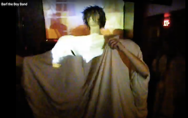
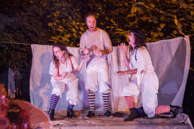
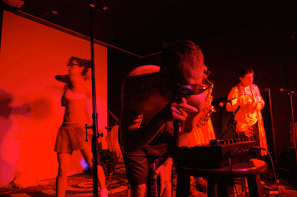
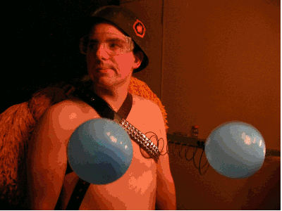
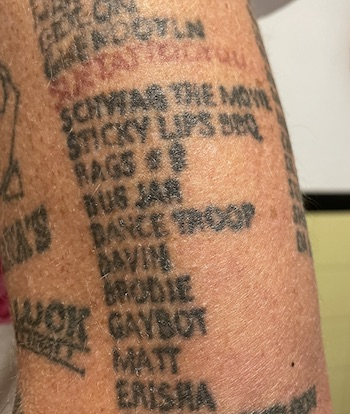
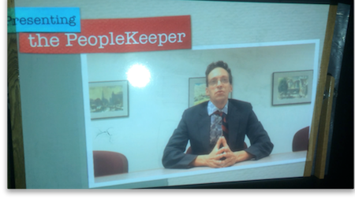
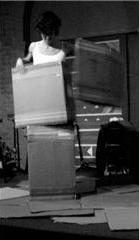
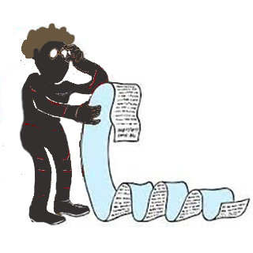

2012

many projects many people /// different times and different PLACES /// some documented and some lost to the ages
| MEM (Potluck) 2011 | MEM was an Ian Downey video project for the band Augur. One day of shooting "a mysterious upstate cult" and three years of editing footage from 4-6 cameras. A ten minute very gory music video and a forty minute movie exist. |  |
| Metal Quest 2012 | Jeffrey Askins project at MUCCC, he directed us in a pantomime opera and shredded guitar to the whole thing. Pretty good all things considered. See more here. | |
| Trial of Condemnation 2010 | Brian Boice project, (very) abstract pantomime based on witch hunts. We didn't know where to stage this so we just set up our whole thing guerrila style at Village Gate upstairs one night. A whole "play", and Brian went mad with power and turned it into an art opening with elaborate strawberry pie and astrology readings. A true deep cut & undocumented experience. |  |
| Barf the Boyband 2012? 2014? | One night performance supergroup in celebration of Carbon Records CR200. Me, Ian, Dr. Hamburger, Col. Parm, and Joel doing fan favorites "Front Butt" "I'm so itchy" and "Angela Lansbury's Lotion Surprise". Just a mess all around, guys. Watch here if you dare. |  |
| Shakesblood 2015 | I don't normally theater and I don't do Rochester Fringe, except for this project by David Henderson which featured being in a witch trio with my boy Bobby M and like 8 kinds of blood effects. Photo credit John Schlia. |  |
| John Cage Variations V 2017 | A very good evening performance staged by Tara Nelson at VSW where like twenty people simultaneously have a tiny stage on the auditorium floor and cast circles to determine the structure of their activities, two or three hours of that. I wish I was an audience member for this one. |  |
| Gaybot 2006 | A couple of times I got to be in Gaybot, like most people. Once in Buffalo and once in a barn far away. At the barn I remember screaming into a microphone for a while before realizing it wasn't on. This is the kind of performance that Gaybot gets out of you. |  |
| Gaybot Musical 2005 | My first Rochester group performance activity, and it made a big impression. University kids used to stage an annual art show "with the community" and Brian Blatt put forth this group chaos origin story portraying the unbound forces giving rise to his band Gaybot. Mostly we came up with very good and odd costumes and ran around chanting. Photos credit Andrea Salzman. |  |
| slurblown record release 2007 | Joey Pitts and I did like a gogo dance thing for Matty's Slurblown record release. We made weird dresses from pillowcases and cattails and mine ripped and i danced half the night with my boob out and no idea really. I swear I wasn't trying to show you up Joey. The album. |
| Dance Troop 2006 | An idea; a dream. First stab at performance-with-friends. We went out three times, once on my 30th birthday and Simon got us very high and wore a cop uniform and made the ice cream girl give him free ice cream "allegedly". And Dan wore a giant skull head and a lady at the Psychic Fair swooned "my husband!" A lot of brainstorming, a lot of action. Free Air! |  |
| If Boys Wore The Skirts 2013 | John Borek commissioned a group of us to stage a birthday play. I wrote and directed and had a total ball. Please enjoy the lookbook. |  |
| Terror Prison 2014 | Ted Forsyth had a big idea to make a Haunted House at the Flying Squirrel Community Center. Bloody Noes teamed up with BlattCo to produce a horrifying prison experience in the ancient Squirrel basement. |  |
| Pure Kona 2007 | The longest running poetry group in Rochester, maybe THE WORLD, Pure Kona is insanely generous with stage time and I really cut my teeth on hammering out my version of what-is-performance in front of this group. Certainly Bloody Noes would not exist without it. Here is Pure Kona on Faceblork. Here are BN in an early Kona performance, Gas Can Scam. Picture by Marie Starr of my first solo feature. |  |
| The People | Oh my god I've worked with so many people over the years in trying to stage weirdo things. Some regular players and many curious one-off participants. Some of the most fun in my life but ultimately like .. it's very unnatural maybe to keep leaning on your friends for creative labor? At least in all fairness absolutely no one was getting paid including me. We were all (I hope) just having a good homemade time. |  |